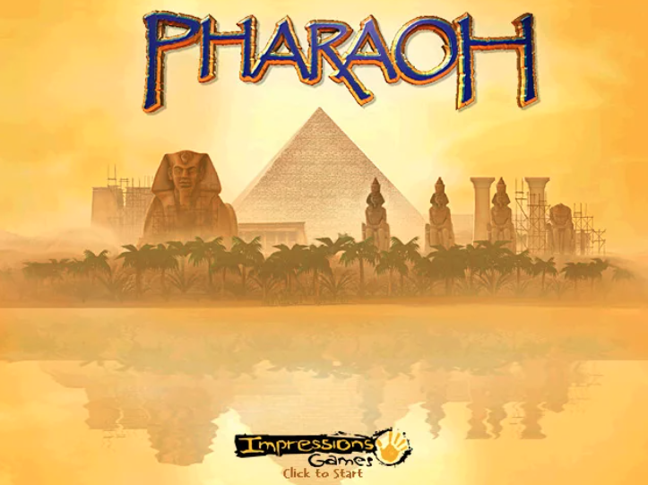
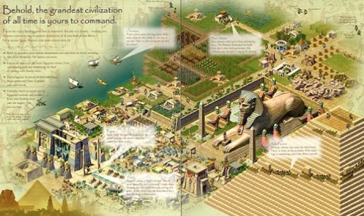
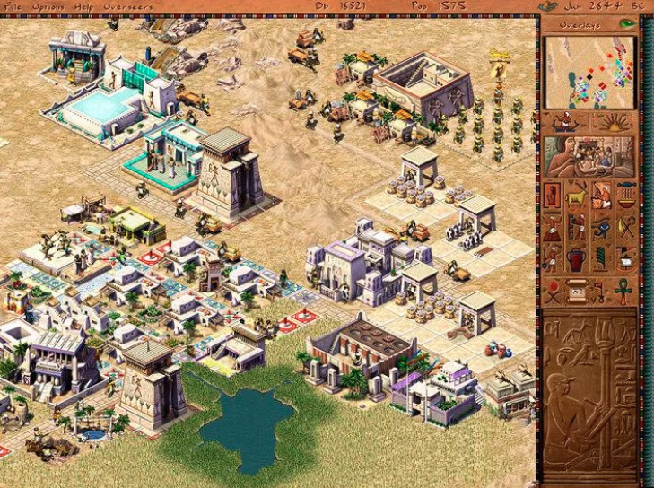
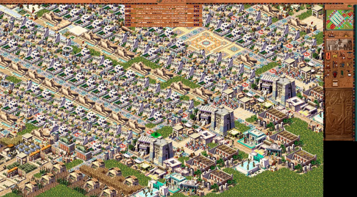
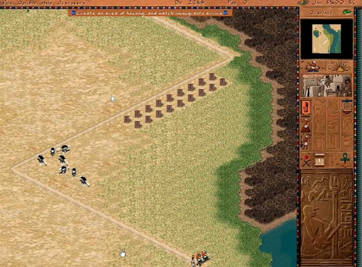
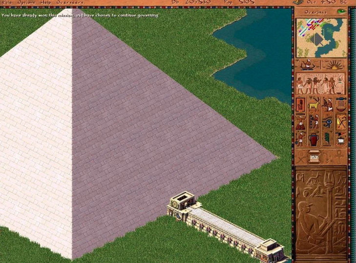
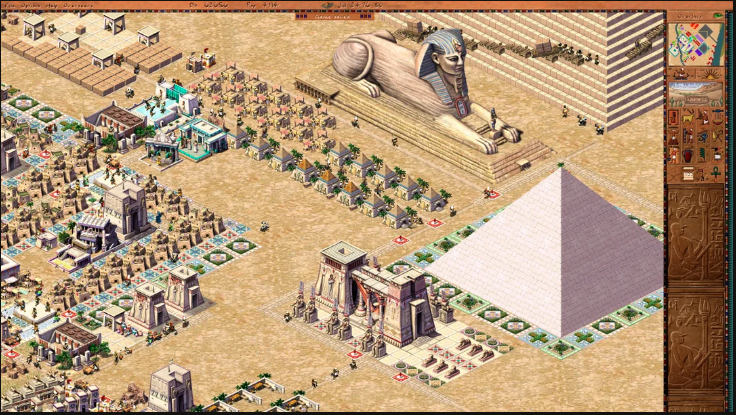
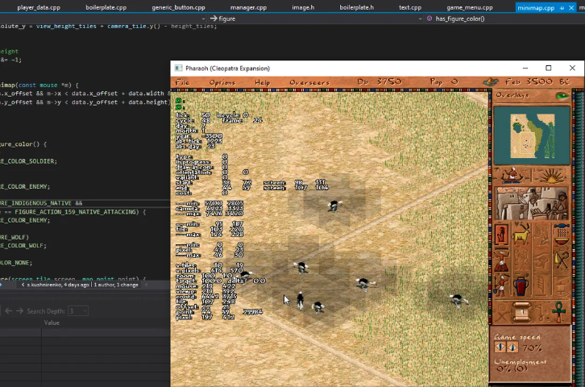

The Story of original Pharaoh game
Simon Bradbury created engines for Caesar 1/2/3, Space Colony, and the Stronghold series. Caesar sold over 400k copies on disk between 1998–2000, but Pharaoh + Cleopatra is widely considered the best in the series.

Development history
Development began fall 1997, about a year before Caesar 3 shipped. After two years of work, many planned mechanics (dynamic trading, labor markets, weather, dynamic map changes) were still unfinished — some made it into the Cleopatra expansion, others only appeared in later series entries. Even the setting itself was not fully defined, and some animations were still in draft form, while others were borrowed and redrawn from Caesar.

After Caesar 3's release, company founder David Lester departed and Chris Beatrice (lead designer, self-described artist) took over. "Remember, I'm an artist," Chris told his colleagues, "I was never a game designer or a CEO." In 1998, Caesar 3 was at the peak of its popularity, but instead of revisiting Ancient Rome with deeper mechanics and the beginning trend for 3D games, Chris and his team decided to change the setting to something more ambitious. A "Caesar in space" concept was quickly rejected, but the idea of Ancient Egypt/Greece/India sparked tremendous interest from the European marketing team.
There was still a year to go before the expected release, but due to disagreements and Simon's dissatisfaction with the management and the intense pressure to meet deadlines, Simon Bradbury left the studio and founded his own (Firefly Studios), where he continues to create games to this day.
S.B. — "Chris was always pushing the damn team, trying to come up with some bloody new stuff, and the idea of just sticking with a successful game was like nonsense heresy — no one did it that way, and it didn't dirty well help the work either."
Simon's departure had a very negative impact on the game's progress; some mechanics had to be postponed for the expansion pack. In fact, he was responsible for most of the programming work on the engine and was the main source of knowledge about game, engine and inside mechanics. Simon's name was not mentioned in the game credits — they probably just forgot.
S.B. — "Blimey, they 'ad to bring in five more folks just to do me bleedin' job. Never thought I was worth all this bother."

Team size
Before 1999, only three people were working on the Caesar/Pharaoh engine: Simon Bradbury (Render/Code), Gabe Farris (GD/Code), and Mike Jigenrich (Code). About a year before the release of Pharaoh, a team of around 10 people was already working on the Pharaoh game code.
Technical details
As an example of how complex the social system was implemented in the game, Chris recalls a chain of events related to the educational system:
C.B. — "So, there's this man go to collecting reeds, then those reeds get turned into papyrus. The teacher comes along and takes the papyrus, then the school hires the teacher, who starts educating the kids. Now, the houses need to be of a wealthy for the kids to go to school."
Unlike previous games, in Pharaoh, the NPCs actually move between destinations instead of aimlessly wandering around. When the population reaches thousands, things get incredibly complex, so in order to maintain a steady fps rate, the number of active objects per frame was reduced from 5,000 in Caesar to 2,000 in Pharaoh. According to Simon's words, even in Caesar, there were significant challenges with implementing the core logic within the limited resources of the processor and memory — the game had to run on just 32MB RAM.
S.B. — "One of the big challenges with city-building games is that there are so many characters moving around that you can't spend too many cycles or memory on each individual character, but the map is constantly changing. Floodplains are not the only things that change. The player can build a new road, destroy a road section after a destination has been calculated, or leave a wandering character stranded without a way back. So, we used simplified simulation for objects on the same tile. One NPC would perform the main action, and copies of the instructions were given to the others."

Art direction
Heidi Mann was lead of the game's graphics, and she had previously worked on Caesar 2/3. As the lead artist on the project, she was responsible for creating the overall visual style of the game. Despite the game being set on a 2D grid, "Pharaoh" had amazing 3D graphics. The game's objects were first assembled in a 3D package, then a grid of tiles was placed over them, and artists manually redrew and applied to the original textures, giving the whole game a high-quality and picturesque appearance. Later, Heidi would refer to this technique as "ping-pong texturing" in one of her interviews. Technically, Heidi was the lead artist, but roles within the team were relatively fluid — she worked on animations, while Chris, for example, handled everything for the ostriches, from code to textures.

Monuments
According to the game's fans, the addition of monuments in Pharaoh transformed the game into the best city-building game of its time. Unlike Caesar and other city-building games before it, it was challenging to give players a main goal. There were general goals like "more population," "happy citizens," "full warehouses," and others, but they still didn't provide a tangible objective. However, when your city is functioning strong, and you have the resources to build a massive, truly enormous monument that takes up half the screen (1024×768) and grows before your eyes — for a 2D game of that era, having something so huge on the screen was truly astonishing.

Like in ancient Egypt, these epic structures become the focal point of the society. To build a pyramid from bricks, for instance, players must not only accumulate a vast amount of materials and labor but also establish guilds of carpenters, stonemasons, and bricklayers to form a skilled workforce. It's a complex and challenging task that requires careful planning and management. The game captures the essence of the monumental efforts and resources needed to construct such grand structures in the ancient world.
The ancient Egyptian atmosphere brings a whole lot of interesting new features to the game. Regular flooding of the Nile river demands that the city produces or imports enough food to endure the flood season. A poor flooding can lead to lousy irrigation and food shortages, making the satisfaction of the god of flooding, Osiris, a vital task. The religion system in "Pharaoh" hasn't seen much improvement compared to "Caesar III," but appeasing the gods is now a less prioritized task. There are fewer gods in each scenario, making the process less knotty. These changes enrich the gameplay experience, allowing players to focus on other crucial aspects of developing their city and empire.
Sales
Producer Greg Sheppard recalled how the team worked tirelessly to fine-tune the construction mechanics until the very last moment: "We were just about to hit the deadline, and the pressure was intense. The game was going to be much bigger than Caesar III, so we needed a robust engine to handle the load. Building the pyramids block by block was a technical marvel on its own. We were still fixing critical bugs in that area just days before the game went gold. It was a nerve-wracking experience, but seeing it all come together was truly rewarding. We put our hearts and souls into Pharaoh, and I'm immensely proud of what we achieved."
While next games from the company only added new gameplay elements without fundamentally changing the core of the game, Pharaoh took a different approach by polishing the visual design and core components based on Caesar's engine. For me, Pharaoh remains the most playable and visually stunning game in the series, perhaps because it has a touch of mystique, a lot of manual arts, and parts the developers' souls — call it what you wish. Just take a look at Heidi's cover art; it captures the essence of the game beautifully. Pharaoh truly stands out as a labor of love and a testament to the dedication of its creators.
The game sales exceeded 1.7 million copies, each priced at $45, within five years since its release in 1999. This remarkable achievement is even more impressive considering the budget for the game was less than $2M. Pharaoh's success accounted for over a third of all sales in the series, making it a significant commercial hit.

Rights & legacy
After a series of ownership changes, the rights to the game development, settings, mechanics, and engine of the Caesar and Pharaoh series ended up with Activision, though not the rights to the games themselves. The rights to the games (Caesar/Pharaoh) remained with Tilted Mill Entertainment, led by Chris Beatrice. However, in 2013, the studio filed for bankruptcy and closed down, and Chris shifted his focus to developing mobile games.
In 2018, the rights to the music and assets of Caesar and Pharaoh were acquired by Dotemu from the New Zealand-based company CerebralFix. The current ownership status of these rights remains unknown. Dotemu and Triskell Interactive released a remake of the game called "Pharaoh: A New Era".
Two years ago, I stumbled upon the Ozymandias project, which aims to recreate the Pharaoh engine, just like it was done for Caesar. During that time, I mostly assisted the project with advice, sometimes with code, and occasionally delved into complex mechanics. However, recently, the original author abandoned it, and I've decided to continue the development on my own — which is what Akhenaten is.
Welcome, together much interesting revive ancient pyramids!
